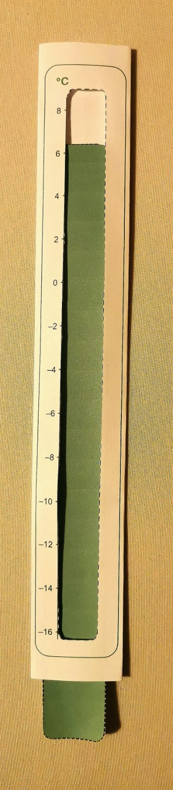
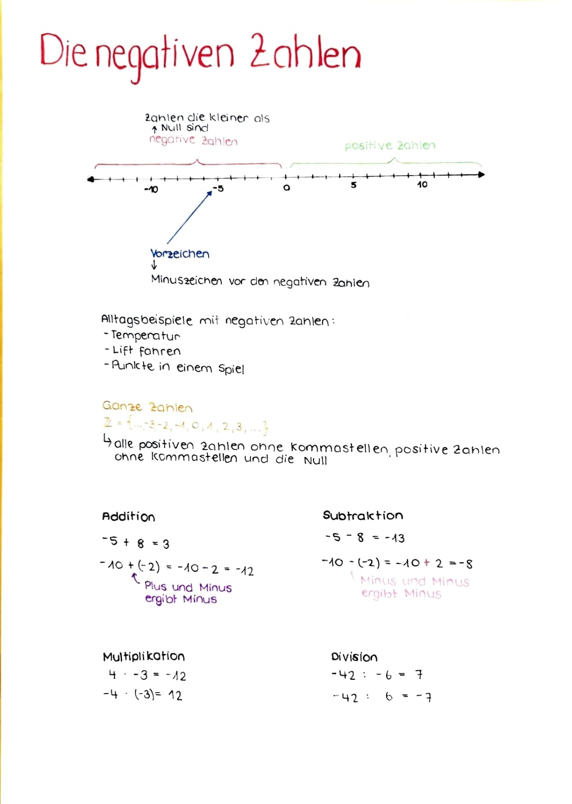
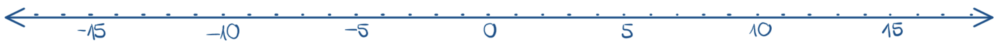
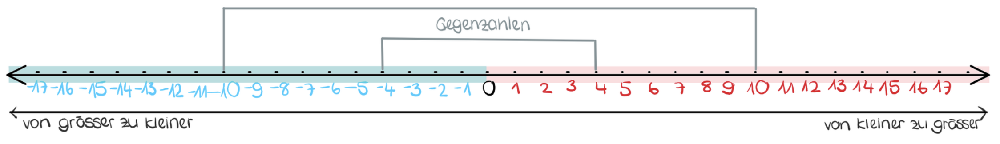
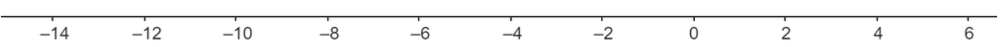
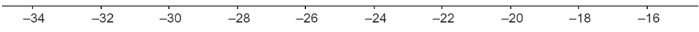
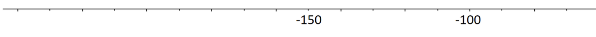
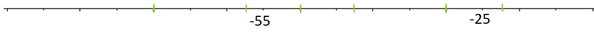

Negative Zahlen
Addition, Subtraktion, Multiplikation und Division
Zwei Doppellektionen zum Rechnen mit negativen Zahlen (Addition, Subtraktion, Multiplikation und Division) mit einer Mischung aus LP-Erklärungen und Gruppenaufgaben sowie einem unterrichtsbegleitenden Skript.
Lektion 1
Die Schülerinnen und Schüler…
- wenden die negativen Zahlen in einem realen Kontext an, z.B. bei Temperaturangaben auf dem Thermometer ablesen.
- vergleichen negative Zahlen mit positiven Zahlen und tragen sie auf der Zahlengerade richtig ein.
- führen die Grundoperationen (Addition, Subtraktion, Multiplikation und Division) mit negativen Zahlen korrekt aus
Einstiegsaufgabe (20 Min.)
Um in das Thema der negativen Zahlen etwas spielerisch Einzusteigen, befassen sich die SuS zunächst mit folgender Textaufgabe. Um sich an das Konzept der negativen Zahlen anzugewöhnen können sie mithilfe eines selbstgebastelten Thermometers arbeiten. Durch ein verschiebbare Temperaturanzeige soll es den Lernenden einfacher fallen die Aufgaben zu lösen.
Übungsaufgabe 1 (Thermometer) MA.1.A.1.i
- Die Temperatur beträgt am frühen Morgen -3°C. Im Laufe des Tages steigt die Temperatur um 6°C.
- Frage: Welche Temperatur herrscht am Abend?
- Am Abend beträgt die Temperatur −2° Über Nacht sinkt die Temperatur um 5°C.
- Frage: Wie warm ist es am nächsten Morgen?
- Die Temperatur in Stadt A beträgt −8°C, und in Stadt B beträgt sie 2°C.
- Frage: Wie viel kälter ist es in Stadt A als in Stadt B?

Kärtchenaufgabe (20 Min.)
In vierer Gruppen setzen sich die SuS an einen Tisch. Die LP verteilt ihnen je ein Couvert, welches 4 Kärtchen mit ganzen Zahlen enthält. Die SuS haben nun die Aufgabe, die erhaltenen Zahlen der Grösse (von der kleinsten zur grössten Zahl) nach zu ordnen ↔︎ gewissermassen, sollen sie eine persönliche Zahlengerade auf dem Tisch auslegen)
Sobald sich alle Gruppenmitglieder einig sind, kann ein weiterer Umschlag verlangt werden mit weiteren Kärtchen. Diese müssen in die bereits bestehende Zahlengerade integriert werden. Und so weiter (im Ganzen gibt es 4 Runden)
Das Ergebnis wird der LP gezeigt. Falls Fehler vorhanden sind, müssen die Gruppen ihre Einteilung nochmals überdenken.
Einführen der Grundoperationen \(\Longrightarrow\) zunächst Addition und Subtraktion
Schrittweises herantasten an das eigentliche Vorgehen. Durch Fragen an die Klasse. (Induktives Vorgehen) → Wer weiss wie man vorgehen könnte, um diese Aufgabe zu lösen? (Vorschlage anhören und mit den SuS durchspielen / falls sich niemand meldet auf den zuvor gezeichneten Zahlenstrahl hinweisen: Wie könnte diese Zeichnung hilfreich eingesetzt werden, um das richtige Resultat zu erhalten?) Vorgehen wiederholt vorzeigen und SuS auffordern eine Aufgabe vorzulösen (Vorgehen mündlich erklären Das Verschmelzen von Zeichen (+- / –) erklären: Merksätze einführen: Minus und Minus gibt Plus / Minus und Plus gibt Minus
Einführung der Grundoperationen: Multiplikation und Division
Beispielaufgabe vorlösen (lautes Denken der LP) \(\Longrightarrow\) SuS müssen dann das Vorgehen erkennen. Die Lösungen der anderen Aufgaben werden gemeinsam erarbeitet (Deduktives Vorgehen) Den SuS die Möglichkeit geben selbst über das Vorgehen nachzudenken
Einführung in die Addition (7 Min.)
\(-10 + 4\)
\(-15 + 20\)
\(-4 + (-8)\)
\(5 + (-10)\)
\(-3 + (-9)\)
Einführung in die Subtraktion (8 Min.)
\(-9 – 5\)
\(5 – 20\)
\(10 – 25\)
\(4 – (-3)\)
\(-12 – (-9)\)
\(-35 – (-9)\)
Übungsaufgabe 2 (Übungsaufgaben Addition und Subtraktion) Berechne!
- \(-14 + (-30) =\)
- \(-49 - 14 =\)
- \(-17 + (-2) =\)
- \(5 + 44 =\)
- \(41 - (-41) =\)
- \(6 + (-43) =\)
- \(35 + (-48) =\)
- \(-42 - (-9) =\)
- \(-42 + (-11) =\)
- \(5 + (-11) =\)
- \(10 + 39 =\)
- \(1 - 19 =\)
- \(-3 + 41 =\)
- \(-35 + (-19) =\)
- \(31 - 39 =\)
- \(0 - 16 =\)
- \(-39 - 40 =\)
- \(23 + (-7) =\)
- \(-4 + (-20) =\)
- \(46 + 39 =\)
- \(3 + (-37) =\)
- \(40 + 37 =\)
- \(46 + (-13) =\)
- \(46 - (-43) =\)
- \(-47 + (-21) =\)
- \(27 - (-11) =\)
- \(-8 - (-35) =\)
- \(28 + 10 =\)
- \(-49 + (-16) =\)
- \(-13 - (-25) =\)
⇒ vgl. Kopiervorlage Addition und Subtraktion
Auftrag für Schnelle
Bearbeiten Sie im Skript (siehe unten) die Aufgaben 4 und 5.
Übungs-Programm (10 Min.)
Das Übungs-Programm eignet sich dafür das Kopfrechnen zu trainieren und zu automatisieren. Dabei kann ausgewählt werden, ob negative Zahlen in den Aufgaben integriert sind und ob Multiplikations- und Divisionsaufgaben gestellt werden. Zusätzlich zeigt das Programm an, wie viele der gestellten Aufgaben richtig beantwortet wurden.
Man findet es unter diesem Link
Lektion 2
Einsteigsaufgabe: Entwicklung eigener Textaufgaben:
Die SuS bilden Vierergruppen und setzen sich gemeinsam an einen Tisch. Nun muss jeder für sich eine eigene Textaufgabe zum Thema der negativen Zahlen entwickeln. (Vorgabe: Es darf sich nicht um eine Aufgabe handeln, die sich mit Temperatur / Thermometer befasst \(\Longrightarrow\) Appell an die Kreativität der SuS)
Sobald die alle SuS der Gruppe min. eine Aufgabe kreiert und eine Lösung erstellt haben. Können die Aufgaben unter den Gruppenmitgliedern ausgetauscht werden. So dass jeder SuS eine Aufgabe einer Mitschülerin oder eines Mitschülers löst.
Je nach dem, wie selbstständig die SuS arbeiten, kann den SuS vorgegeben werden, dass sie die selbstkreierten Aufgaben vor dem Austausch mit der LP besprechen müssen.
Bei Unklarheiten oder nicht übereinstimmenden Ergebnissen kann eine Beispielaufgabe anschliessend auch mit der gesamten Klasse besprochen werden.
\(\Longrightarrow\) Es ist das Ziel, dass sich die SuS etwas stärker mit dem Alltagsbezug der negativen Zahlen auseinandersetzten und sich selbst eine Situation überlegen, in der negative Zahlen eine Rolle spielen. Hierbei soll zudem ihre Sprachkenntnisse verwendet und gefördert werden.
Für das Ausführen dieser Aufgabe, wird den SuS genügend Zeit gelassen, damit die SuS ihrer Kreativität freien lauf lassen können (oder etwas länger über geeignete Beispiele nachdenken).
Einführung in die Multiplikation (7 Min.)
\(-5 \cdot 4\)
\(-8 \cdot 3\)
\(7 \cdot (-7)\)
\(-4 \cdot (-2)\)
Einführung in die Division (8 Min.)
\(12 \div (-9)\)
\(-3 \div 5\)
\(-5 \div (-4)\)
Übungsaufgabe 3 (Übungsaufgaben Multiplikation und Division (15 Min.)) Berechne!
- \(-5 \cdot 3 =\)
- \(-18 \div 3 =\)
- \(28 \div (-7) =\)
- \(-7 \cdot (-4) =\)
- \(-36 \div (-6) =\)
- \(6 \cdot (-8) =\)
- \(-9 \cdot 5 =\)
- \(-45 \cdot 5 =\)
- \(-3 \cdot (-2) =\)
- \(56 \div (-8) =\)
- \(-72 \div 9 =\)
- \(10 \cdot (-7) =\)
- \(-50 \div (-10) =\)
- \(-4 \cdot 6 =\)
- \(-11 \cdot (-3) =\)
- \(48 \cdot (-6) =\)
- \(-30 \div (-5) =\)
- \(12 \cdot (-5) =\)
- \(-8 \cdot 9 =\)
- \(15 \cdot (-2) =\)
- \(42 \div (-7) =\)
- \(-6 \cdot (-6) =\)
- \(14 \cdot (-3) =\)
- \(-24 \div 6 =\)
- \(36 \div (-12) =\)
- \(-10 \cdot 4 =\)
- \(7 \cdot (-7) =\)
- \(-81 \div (-9) =\)
Üben (25 Min.)
Arbeiten Sie weiter an den Aufgaben oben oder am Skript unten.
Abschluss / Ergebnissicherung (20 Min.)
Auftrag: Erstelle auf einem leeren A4-Blatt ein Lernplakat, welches das Gelernte zum Thema negative Zahlen zusammenfasst. Enthalten muss es wichtige Regeln, Begriffe und dazugehörige Definitionen, Darstellungen und Beispiele. Des Weiteren solltest du mit verschiedenen Farben arbeiten, in gut leserlicher Schrift schreiben und den zur Verfügung gestellten Platz des Papieres ausnützen.
So könnte ein solches Mini-Plakat aussehen: 
Skript
Lernziele zum Thema „Negative Zahlen“
Die nachfolgend aufgelisteten Lernziele werden dir helfen dich auf die Lernkontrolle optimal vorzubereiten.
Du …
- kannst die Begriffe positive Zahlen, negative Zahlen, ganze Zahlen und Vorzeichen erklären.
- kannst ganze Zahlen auf einem Zahlengerade eintragen.
- kannst ganze Zahlen der Grösse nach ordnen und miteinander vergleichen.
- kannst die negativen Zahlen in einem realen Kontext anwenden, z.B. bei Temperatur angaben auf dem Thermometer.
- kannst die Grundoperationen (Addition, Subtraktion, Multiplikation und Division) mit geraden Zahlen ausführen.
Die negativen Zahlen
Übungsaufgabe 4 Ein Wissenschaftler arbeitet in einem Forschungslabor in der Arktis. Hier können die Temperaturen weit unter 0 °C fallen. Im Verlaufe des Tages notiert er sich immer wieder die beobachte ten Temperatur änderungen. Am frühen Morgen zeigt der Thermometer genau 1 °C an.
- Zunächst sinkt die Temperatur um 9 °C.
- Anschliessend steigt sie wieder um 4 °C.
- Danach sinkt sie erneut um 12 °C.
Welchen Wert zeigt der Thermometer am Ende des Tages an ?
Was bedeutet es, wenn die Temperatur unter 0 °C liegt ?
Zeichne zusätzlich in die unten abgebildeten Zahlengerade deine Zwischenresultate ein.

Negative Zahlen sind Zahlen, die kleiner als null sind und auf einer Zahlengerade links von der Null liegen. Sie werden durch ein Minuszeichen (-) vor der Zahl dargestellt. Negative Zahlen stellen in vielen Kontexten das Gegenteil von positiven Zahlen dar. Eine negative Zahl n ist eine Zahl, die die Bedingung n < 0 erfüllt.
Übungsaufgabe 5 Suche weitere Beispiele aus dem Alltag, in denen dir negative Zah len bereits begegnet sind.
Beim Rechnen mit negativen Zahlen ist es wichtig, dass du das Minuszeichen vor der negativen Zahl nicht mit dem Operationszeichen der Subtraktion verwechselst.
Negative Zahl: -3
Subtraktion: 3 - 2 = 1
Um diese Verwechslung zu verhindern verwenden wir die Bezeichnungen «negativ» für das Vorzeichen und «minus» für die Subtraktion.
Um uns die Position der negativen Zahlen auf der Zahlengerade besser einprägen zu kön- nen. Arbeiten wir zunächst mit unterschiedlichen Farben. Rot für die positiven Zahlen und blau für die negativen Zahlen.

Die ganzen Zahlen sind die Menge aller positiven Zahlen ohne Kommastellen, aller negativen Zahlen ohne Kommastellen und der Null. Sie umfassen also sowohl die na- tür lichen Zahlen (1, 2, 3, …), ihre negativen Gegenstücke (-1, -2, -3, …) als auch die Null.
Die Menge der ganzen Zahlen wird oft mit dem Symbol ℤ bezeichnet und kann als: ℤ = { …,−3,−2,−1,0,1,2,3,…} beschrieben werden.
Übungsaufgabe 6 Trage die folgenden Zahlen auf den unten dargestellten Zahlengeraden an der richtigen Stelle ein:
- -1, 5, -17, -9, -25
- -7.5, -28.75, -20.3, -32.6


Wenn du eine negative Zahl zu einer positiven Zahl addierst, bewegst du dich auf der Zahlengerade in Richtung der negativen Zahlen.
4 + (-3) = 4 - 3 = 1
Wenn du eine positive Zahl zu einer negativen Zahl addierst, bewegst du dich auf der Zahlengeradein Richtung der positiven Zahlen.
-4 + 3 = -1
Wenn du zwei negative Zahlen miteinander addierst bewegst du dich wei- ter in Richtung der negativen Zahlen.
-3 + (-4) = -3 - 4 = -7
Zwei ungleiche Rechenzeichen verschmelzen immer zu einem Minus.
Übungsaufgabe 7 (Berechne!)
- −7 + 9 =
- −5 + −7 =
- −3 + 4 =
- −9 + −10 =
- −6 + 1 =
- −4 + 5 =
- −4 + −6 =
- −9 + 5 =
- −6 + −10 =
- −2 + −11 =
- −6 + −15 =
- −7 + −13 =
- −4 + −13 =
- −5 + 8 =
- −2 + 8 =
- −5 + −3 =
- −4 + −10 =
- −7 + 4 =
- −5 + −9 =
- −2 + 5 =
- −6 + 6 =
- −4 + 7 =
- −2 + −6 =
- −5 + −4 =
Wenn du von einer positiven Zahl eine negative Zahl subtrahierst, bewegst du dich auf der Zahlengerade in Richtung der positiven Zahlen.
5 - (-2) = 5 + 2 = 7
Wenn du von einer negativen Zahl eine positive Zahl subtrahierst, bewegst du dich auf der Zahlengerade in Richtung der negativen Zahlen.
-2 - 5 = -7
Wenn du eine negative Zahl von einer negativen Zahl subtrahierst, wanderst du auf der Zahlengerade nach rechts, also in Richtung der positiven Zahlen.
-2 - (-5) = -2 + 5 = 3
Zwei gleiche Rechenzeichen verschmelzen immer zu einem Plus.
Übungsaufgabe 8 (Berechne!)
- \(-6 - (-15) =\)
- \(-19 - (-2) =\)
- \(-19 - (-13) =\)
- \(3 - (-6) =\)
- \(-9 - (-12) =\)
- \(-3 - (-3) =\)
- \(-15 - (-2) =\)
- \(-7 - (-3) =\)
- \(-12 - (-1) =\)
- \(-9 - (-13) =\)
- \(-6 - (-13) =\)
- \(-9 - (-6) =\)
- \(-11 - (-10) =\)
- \(-13 - (-9) =\)
- \(-17 - (-8) =\)
- \(4 - (-11) =\)
- \(-2 - (-7) =\)
- \(-4 - (-6) =\)
- \(-8 - (-9) =\)
- \(-13 - (-12) =\)
- \(2 - (-7) =\)
- \(-16 - (-12) =\)
- \(-12 - (-10) =\)
- \(1 - (-12) =\)
Übungsaufgabe 9 (Vermischte Aufgaben)
- \(-13 - (-47) =\)
- \(-39 + \ldots = -5\)
- \(-16 - 8 =\)
- \(-5 - (-50) =\)
- \(-42 - (-31) =\)
- \(-59 + \ldots = -36\)
- \(-21 + \ldots = -17\)
- \(-23 + \ldots = -11\)
- \(-9 - 8 =\)
- \(-73 + \ldots = -50\)
- \(-57 + \ldots = -18\)
- \(-30 + \ldots = -17\)
- \(-59 - (-43) =\)
- \(-38 - (-58) =\)
- \(4 - (-13) =\)
- \(-49 - 2 =\)
- \(-13 - (-25) =\)
- \(-17 + \ldots = 17\)
- \(-96 + \ldots = -136\)
- \(-3 - 4 =\)
- \(-55 + \ldots = -53\)
- \(3 - (-24) =\)
- \(-81 + \ldots = -127\)
- \(-28 + \ldots = -35\)
- \(3 - (-41) =\)
- \(-91 + \ldots = -85\)
- \(-12 - (-20) =\)
Multiplizierst du eine negative und eine positive Zahl, so erhältst du ein negatives Resultat.
\(-8 \cdot 6 = -48\)
\(7 \cdot (-5) = -35\)
Das Produkt zweier negativer Zahlen ist immer positiv.
\(-9 \cdot (-2) = 18\)
\(-6 \cdot (-5) = 30\)
Übungsaufgabe 10 (Berechne!)
- \(6 \cdot 1 =\)
- \(4 \cdot 9 =\)
- \(-9 \cdot 9 =\)
- \(5 \cdot 12 =\)
- \(-6 \cdot 11 =\)
- \(9 \cdot -3 =\)
- \(12 \cdot 9 =\)
- \(11 \cdot 4 =\)
- \(8 \cdot 6 =\)
- \(10 \cdot 12 =\)
- \(-2 \cdot 4 =\)
- \(-6 \cdot -1 =\)
- \(9 \cdot 11 =\)
- \(8 \cdot 12 =\)
- \(8 \cdot 1 =\)
Dividierst du eine positive Zahl durch eine negative Zahl, ist das Ergebnis negativ.
\(6 \div (-3) = -2\)
Dividierst du eine negative Zahl durch eine positive Zahl, erhältst du ein negatives Resultat.
\(-6 \div 3 = -2\)
Dividierst du zwei negative Zahlen, ist das Resultat positiv.
\(-6 \div (-3) = 2\)
Übungsaufgabe 11 (Berechne!)
- \(-48 \div -1 =\)
- \(8 \div -4 =\)
- \(-12 \div -4 =\)
- \(6 \div -6 =\)
- \(49 \div -7 =\)
- \(14 \div -2 =\)
- \(26 \div 13 =\)
- \(8 \div 4 =\)
- \(42 \div 3 =\)
- \(-44 \div -1 =\)
- \(-30 \div 3 =\)
- \(36 \div 4 =\)
- \(28 \div -7 =\)
- \(22 \div 2 =\)
- \(6 \div -6 =\)
Übungsaufgabe 12 (Vermischte Aufgaben)
- \(-20 - 6 =\)
- \(-2 \cdot 6 =\)
- \(-17 + -18 =\)
- \(-5 + -16 =\)
- \(-5 \cdot 4 =\)
- \(2 - 7 =\)
- \(-10 \div 2 =\)
- \(-32 + -29 =\)
- \(-15 \div 5 =\)
- \(6 - 8 =\)
- \(-12 \cdot 2 =\)
- \(-32 - 1 =\)
- \(9 \cdot 5 =\)
- \(-26 + -6 =\)
- \(-3 \cdot 3 =\)
- \(-19 + -7 =\)
- \(-9 \cdot 9 =\)
- \(6 \cdot 4 =\)
- \(-47 + -5 =\)
- \(-45 + -40 =\)
- \(-13 - 5 =\)
- \(9 \cdot 8 =\)
- \(-21 + -37 =\)
- \(-43 - 7 =\)
- \(-47 - 7 =\)
- \(-36 - 9 =\)
- \(-7 - 3 =\)
Übungsaufgabe 13 Trage die folgenden Zahlen auf der Zahlengerade ein: -80, -200, -215, -115

Übungsaufgabe 14 Benenne die grün markierten Zahlen

Übungsaufgabe 15 (Berechne!)
- \((-7 - (-16)) + 15 =\)
- \((-60 - (-13)) + (-6) =\)
- \(-10 + (-41 - 16) =\)
- \((-26 - (-13)) + 2 =\)
- \(-30 + (-6 - 10) =\)
- \(-35 + (-17 - 0) =\)
- \((-46 + (-2)) - 7 =\)
- \(-48 + (-38 - (-1)) =\)
- \(4 + (-5 - (-4)) =\)
- \(-17 + (-14 - 2) =\)
- \(32 + (-8 - (-5)) =\)
- \((-87 - (-32)) + (-5) =\)
- \(-44 + (-24 - 7) =\)
- \((10 - (-8)) + 9 =\)
Übungsaufgabe 16 Tom hat ein Bankkonto, auf dem er im Moment 50.- hat. Er muss seine Miete von 120 Franken bezahlen.
- Wie viel Geld hat Tom nach der Mietzahlung?
- Tom verdient am nächsten Tag 80 Franken. Wie viel Geld hat er jetzt?
Übungsaufgabe 17 In einem Spiel erhält Lukas für eine richtige Antwort 10 Punkte und verliert für eine fal- sche Antwort 15 Punkte. Lukas hat 5 richtige Antworten und 3 falsche Antworten gege- ben.
- Wie viele Punkte hat Lukas insgesamt durch die richtigen Antworten gesammelt?
- Wie viele Punkte hat Lukas insgesamt durch die falschen Antworten verloren?
- Wie viele Punkte hat Lukas am Ende insgesamt?
Übungsaufgabe 18 Ein Bergsteiger befindet sich auf einer Höhe von 800 Metern über dem Meeresspiegel. Er steigt zuerst 1500 Meter hinab in eine Schlucht, um einen besonderen Aussichtspunkt zu erreichen. Danach klettert er 900 Meter wieder hinauf.
Übungsaufgabe 19 Ein Unternehmen macht im ersten Quartal des Jahres einen Verlust von 15.000 Franken. Im zweiten Quartal wird ein Gewinn von 22.000 Franken erzielt. Im dritten Quartal verliert das Unternehmen wieder 8.000 Franken, und im vierten Quartal gibt es einen Gewinn von 12.000 Franken.
Wie hoch ist der Gesamtgewinn oder -verlust am Ende des Jahres?
Kommentar für Lehrpersonen
MA.1.A.1.i Die Schülerinnen und Schüler verstehen und verwenden die Begriffe Vorzeichen, positive Zahlen, negative Zahlen.
MA.1.B.1.i Die Schülerinnen und Schüler können heuristische Strategien verwenden: durch Fragen die Problemstellung klären, systematisch variieren, mit vertrauten Aufgaben vergleichen, Annahmen treffen, Lösungsansätze austauschen.
MA.1.B.1.k Die Schülerinnen und Schüler können arithmetische und algebraische Zusammenhänge erforschen, Strukturen auf andere Zahlbeispiele übertragen und Beobachtungen festhalten
MA.3.C.2.f Die Schülerinnen und Schüler können Alltagssituationen (z.B. Flächeninhalt eines Zimmers; Geschwindigkeit eines Autos; Benzinverbrauch) in mathematische Sprache übersetzen, die richtigen Grössen identifizieren und geeignete Masseinheiten wählen.
Allgemein zum Operieren mit negativen Zahlen und nicht nur zu dieser Doppellektion (diese Stolpersteine gelten für den gesamten Themenblock «Negative Zahlen»)
- Schüler verwechseln das Minuszeichen als Teil einer Zahl (z.B. -3) mit dem Minuszeichen als Subtraktionsoperator (z.B. 7 - 3).
- Von Beginn an konsequent klare Bezeichnungen verwenden: «negativ» für das Vorzeichen und «minus» für die Subtraktion. Evtl. können farbliche Markierungen helfen die Unterscheidung deutlicher hervorzuheben.
- Schwierigkeiten zu verstehen, dass das Subtrahieren einer negativen Zahl das Gleiche ist wie das Addieren der positiven Zahl (z.B. 5−(−3) = 5+3)
- Einführung des Merksatzes: «Minus und Minus gibt Plus». Zu Beginn ist es sicherlich sinnvoll Aufgaben mit Hilfe des Zahlenstrahls zu lösen, um sich die Merkregel zu verinnerlichen. Hierbei ist wichtig, dass die SuS auch wirklich verstehen, wieso es sich so verhält und sich nicht nur das Vorgehen einprägen.
- Vorzeichenwechsel bei Multiplikation und Division –> (−2)×(−3) = 6 oder (−4)÷(−2) = 2
- Den genauen Sachverhalt, kann den SuS durch konkrete Beispiele vor Augen geführt werden. Das Prinzip muss mit den SuS umfassend aufarbeitet werden, sodass sie sich darauf einlassen können und anschliessend selbstständig Übungen dazu lösen können.
- Schüler neigen dazu, größere negative Zahlen als „größer“ im positiven Sinne zu betrachten (z.B. denken, dass -5 größer ist als -2)
- Wiederholtes Üben: Aufgaben mit dem Zahlenstrahl lösen, um das Verständnis visuell zu verstärken. Zudem kann das Arbeiten mit bekannten Konzepten helfen ein tieferes Verständnis aufzubauen: Temperatur: -2 °C wärmer ist als -10°C.
- Einige Schüler haben eine Angst vor negativen Zahlen oder glauben, dass sie schwer zu verstehen sind, was ihr Lernen blockiert.
- Die SuS können durch kleine Erfolgserlebnisse ermutigt werden. Zudem kann der spielerische Zugang an das Konzept den ersten Zugang wesentlich erleichtern und das Interesse an der Thematik wecken.
- Natürliche Zahlen (1, 2, 3, …) sind bekannt
- Grundrechenarten (Addition, Subtraktion, Multiplikation und Division) sind bei den natürlichen Zahlen vertraut (werden beherrscht)
- Die Zahlengeraden (mindestens der Zahlenstrahl) wurde schon min. einmal gesehen–> Zahlen sind in einer bestimmten Reihenfolge angeordnet
- Zahlen Vergleichen (>, <, =) können die SuS
- Schüler haben möglicherweise (mit ziemlicher Wahrscheinlichkeit) Erfahrungen mit Alltagssituationen gemacht, die negative Konzepte beinhalten
→ Temperaturen können negativ sein –> sehr kalt
→ Punkte verlieren
→ Lift fahren
→ Etc.